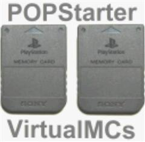

Multi-disc & VMC
DISCS.TXT multi-disc swapping and the SLOT0/SLOT1 virtual memory cards, including VMCDIR.TXT redirection.
DISCS_POOPER.EXE PC tool just auto-generated the DISCS.TXT + VMCDIR.TXT set; it is withheld per this site's policy (any “Download: here” link in the recovered text below is dead). The manual method is simple and documented right here: put a DISCS.TXT listing every disc's VCD in each disc folder, and a VMCDIR.TXT naming disc 1's VCD in the disc 2/3 folders so they share one memory card. On internal HDD it is instead IMAGE0.VCD/IMAGE1.VCD in one PP. partition.📎 from the recovered Multi Disc wiki page · merged across snapshots, primary 20250110103459
Swap disc feature
You can now play multi-discs games with POPS.
- Create a DISCS.TXT text file containing the file names of your VCDs, one file name per line (with VCD extension) ;
DISCS.TXT line 1 = disc 1
DISCS.TXT line 2 = disc 2
DISCS.TXT line 3 = disc 3
DISCS.TXT line 4 = disc 4
Example :
MGS_CD1.VCD
MGS_CD2.VCD
[Empty]
[Empty]
-
Copy/paste this DISCS.TXT file to the VMC folders of ALL your game discs ;
-
When required by the game, open the lid using the hotkey ;
-
Insert the disc you want to load using the hotkey ;
-
Close the lid using the hotkey.
Hotkeys :
-
To open the lid : Select + L2 + R2 + △
-
To insert Disc 1 : Select + L2 + R2 + ↑
-
To insert Disc 2 : Select + L2 + R2 + →
-
To insert Disc 3 : Select + L2 + R2 + ↓
-
To insert Disc 4 : Select + L2 + R2 + ←
-
To close the lid : Select + L2 + R2 + □
Limitations :
-
Up to 4 file names in DISCS.TXT ;
-
A file name must not exceed 89 characters ;
-
The VCD files have to be in the same partition/folder ;
-
If you have more than 4 lines in the DISCS.TXT file, the feature will not work.
Example of working setup :
mass:/POPS/MGS_CD1.VCD
mass:/POPS/MGS_CD2.VCD
mass:/POPS/XX.MGS_CD1.ELF
mass:/POPS/XX.MGS_CD2.ELF
mass:/POPS/MGS_CD1/DISCS.TXT
mass:/POPS/MGS_CD2/DISCS.TXT
DISCS.TXT content :
MGS_CD1.VCD
MGS_CD2.VCD
Notes :
-
The swap disc feature is useful only if you must swap discs without any PS1 reboot. For the other games, you only need to swap the VMCs manually (copy/paste VMCs from VMC disc 1 folder to VMC disc 2 folder) – or you can use the “trick” below to avoid such a manipulation ;
-
If your game has more than 4 discs, install the forth first ones, play them until disc 4, then uninstall discs 1, 2 and 3, and install disc 5, 6, 7…
-
Does not work properly with all games ((not working with Final Fantasy IX and Grandia) ;
-
Multi disc games combined to single VCDs still work, up to ~2GB per VCD.
Use a single pair of VMCs for multi-disc games :
You can use the VMCDIR.TXT file to use only 1 pair of VMCs for a multi-disc game. This VMCDIR.TXT must be placed into disc 1 and disc 2 VMC game folders. Read here to know more about the VMCDIR.TXT file (“Setting a path for the VMC folder” section).
Example :
mass:/POPS/MGS_CD1.VCD
mass:/POPS/MGS_CD2.VCD
mass:/POPS/XX.MGS_CD1.ELF
mass:/POPS/XX.MGS_CD2.ELF
mass:/POPS/MGS_CD1/DISCS.TXT
mass:/POPS/MGS_CD1/VMCDIR.TXT
mass:/POPS/MGS_CD2/DISCS.TXT
mass:/POPS/MGS_CD2/VMCDIR.TXT
DISCS.TXT content :
MGS_CD1.VCD
MGS_CD2.VCD
VMCDIR.TXT content (= CD1 VMC game folder) :
MGS_CD1
In this situation, disc 1 and disc 2 share the same VMC folder.
DISCS POOPER
DISCS_POOPER is a little program that does the boring job for you.
- Download : here
How to use it :
-
Create a new folder ;
-
Drop the VCD files of your multic-disc game in it ;
-
Drop DISCS_POOPER.EXE in the folder and run it ;
DISCS_POOPER creates :
. A VMC folder for each VCD in the folder ;
. A DISCS.TXT inside each VMC folder ;
. A VMCDIR.TXT inside each VMC to use only a pair of VMC for this multi-disc game.
-
Move your VCD and VMC game folders to your POPS folder ;
-
Enjoy.
Limits :
. Doesn’t comply with 4 CDs limit of the swap disc feature (don’t use it with more than 4 VCDs) ;
📎 from the recovered VMC wiki page · merged across snapshots, primary 20170629133617
Virtual Memory Cards
About VMC :
The very first time a game is launched, a new folder named “GAME” (ex : Crash Bandicoot) will be created into your POPS directory – one separate folder for each game. This folder contains 2 files – SLOT0.VMC & SLOT1.VMC, which are your VMCs.
POPS/Crash Bandicoot.VCD
POPS/Crash Bandicoot/SLOT0.VMC
POPS/Crash Bandicoot/SLOT1.VMC
If you know how to hexedit POPStarter, you can change that behaviour to have only 1 VMC created – or not at all. Check the configuration table to know how to change the default setting (offset $429).
Setting a path for the VMC folder :
Here’s how to change the destination VMC folder of your games :
Let’s say your game is MY_GAME.VCD. The VMCs are saved to POPS/MY_GAME/. You want the VMCs to be saved into POPS/BLAHBLAH/ instead.
-
Create an empty text file;
-
Write BLAHBLAH into it;
-
Save it as VMCDIR.TXT;
-
Copy VMCDIR.TXT to POPS/MY_GAME/
Example :
mass:/POPS/MY_GAME.VCD
mass:/POPS/MY_GAME/VMCDIR.TXT
mass:/POPS/BLAHBLAH/SLOT0.VMC
mass:/POPS/BLAHBLAH/SLOT1.VMC
Notes :
-
All the POPStarter files (TROJANs, PATCHes, CHEATS.TXT...) will still be loaded from /POPS/MY_GAME/, but POPS will use the VMCs that are in /POPS/BLAHBLAH/
-
Characters that are obviously not allowed are / \ and :
-
VMCDIR.TXT will not be loaded if it’s bigger than 103 bytes or if it contains more than 1 line.
-
Target folder must remain in POPS folder.
-
This feature is useful when you are several users and want to use different VMCs. Each user can have his own VMC folder.
-
If you want to use a single pair of VMCs for ALL your games, place the VMCDIR.TXT file in POPS folder. The VMCs will not be overwritten but mounted and loaded, and you will be able to save in them with no data loss.
Example :
smb:/YourSharedFolder/POPS/Crash Bandicoot.VCD
smb:/YourSharedFolder/POPS/Tekken.VCD
smb:/YourSharedFolder/POPS/Castlevania - Symphony of the night.VCD
smb:/YourSharedFolder/POPS/VMCDIR.TXT
smb:/YourSharedFolder/POPS/SAVES/SLOT0.VMC
smb:/YourSharedFolder/POPS/SAVES/SLOT1.VMC
with SAVES written into smb:/YourSharedFolder/POPS/VMCDIR.TXT
Here the 3 games mentionned will use smb:/YourSharedFolder/POPS/SAVES/SLOT0.VMC and smb:/YourSharedFolder/POPS/SAVES/SLOT1.VMC as VMCs with no issue.
Additional notes :
- No physical MC support ATM – would be too slow.
Related stuff :
You may want to give a look at this :
Images & screenshots

Multi-disc and virtual memory cards
VMCs: POPS auto-creates a pair of virtual memory-card images on first launch - SLOT0.VMC (controller port 1) and SLOT1.VMC (port 2) - in a per-game folder named after the VCD. PS1 retail saves imported with MemcardRex land in SLOT1.VMC. How many VMCs are created (two/one/none) is set by config offset $429 (NOT $42A, which is the 480p/PAL byte). Crucially, POPS flashes the WHOLE VMC on every save rather than writing a single MC block - this is why saving to a physical memory card is unsupported and why sharing one VMC pair across games is data-safe.
VMCDIR.TXT is a one-line file (<=103 bytes, no / \ : characters) that redirects ONLY the SLOT0/SLOT1 pair to a named folder while every other asset still loads from the game folder; the target must stay inside POPS. Put it in a game folder for per-game redirection, or in the POPS root to collapse the whole library onto one shared VMC pair (per-user save sets, shared saves). When the same asset exists in both the POPS folder and a game's VMC folder, the VMC-folder copy wins - the ONE documented exception is two CHEATS.TXT files where one changes the video mode, which is the actual mechanism behind the base report's 'root CHEATS.TXT may block per-game' note.
DISCS.TXT is the orthogonal multi-disc mechanism: up to 4 VCD filenames (with the .VCD extension), one per line, all in the same partition, copied into every disc's folder. More than 4 lines breaks it; each filename is capped at 89 chars per the wiki, though POPSLoader's own testing shows a practical ~73-char ceiling because it is a full-PATH buffer. In-game disc swapping (since Beta 15) uses Select+L2+R2 plus Triangle (open lid), Up/Right/Down/Left (insert disc 1/2/3/4, mapping to DISCS.TXT LINE numbers), and Square (close lid). Pair DISCS.TXT with a VMCDIR.TXT pointing every disc at disc 1's folder so a multi-disc game keeps one save card. On internal HDD the convention is instead IMAGE0.VCD/IMAGE1.VCD in one PP. partition (sharing one VMC). The PC tool DISCS_POOPER.EXE auto-generates the DISCS.TXT + VMCDIR.TXT set for up to 4 VCDs. Finally, OSD.BIN beats BIOS.BIN: if both exist in a VMC dir, OSD.BIN is injected and BIOS.BIN is ignored (OSD.BIN must satisfy the strict 'PS-X OSD' v1 header).
More wiki sources
Cross-sourced quick-reference cards (provenance-tagged)
VMCDIR.TXT primary vmc
SLOT0.VMC / SLOT1.VMC primary vmc
HDD VMC location primary vmc
POPS/VMC folder priority rule primary vmc
Multi-folder POPS0..POPS9 (USB) asset-duplication caveat primary vmc
DISCS.TXT primary multidisc
Disc-swap hotkeys (lid + disc insert) primary multidisc
VMCDIR.TXT for multi-disc (single VMC pair) primary multidisc
HDD multi-disc (IMAGE0.VCD / IMAGE1.VCD) near-primary multidisc
OSD.BIN over BIOS.BIN precedence primary vmc
OSD.BIN header structure (v1) primary vmc
All 5 wiki pages in this topic
Every recovered page filed under this section — including the deep-reference pages not embedded above.